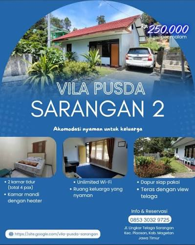
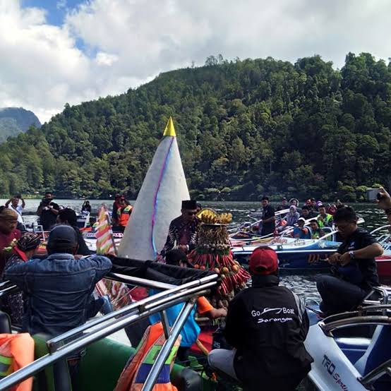
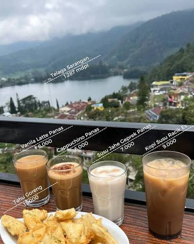

Selamat datang di Telaga Sarangan
Salah satu wisata yang di minati banyak wisatawan karena view gung lawu di dasari telaga . Ayo Dapatkan berbagai kuliner,penginapan, dan adrenaline menarik di Telaga Sarangan.

kuliner
Sate kelinci merupakan salah satu makanan khas telaga sarangan.baik wisatawan maupun warga lokal tidak lupa sarapan dengan sate kelinci

penginapan
tidur nyenyak di beberapa vila yang ada ti pinggir telaga.tidur tanpa di gigit nyamuk? hotel sarangan solusinya.hidup tenang tidur nyenyak
wisata
liburan happy di sarangan untuk meredakan pusing dan setres anda

budaya
kirab di tengah pulau yang ada di tengah telaga.nyai pasir legenda naga telaga sarangan
peninggalan
patung ular yang menjadi ikon peninggalan nyai pasir di telaga sarangan

minuman
minuman coffe shop yang ada di sekitara bukit,dengan view langsung menghadap kawasan telaga sarangan
kuliner rembang
berikut merupakan kuliner yang ada di telaga sarangan
kuliner
Sate kelinci merupakan salah satu makanan khas telaga sarangan.baik wisatawan maupun warga lokal tidak lupa sarapan dengan sate kelinci
penginapan
berikut merupakan penginapan yang ada di sarangan
penginapan
tidur nyenyak di beberapa vila yang ada di pinggir telaga.tidur tanpa di gigit nyamuk? hotel sarangan solusinya.hidup tenang tidur nyenyak
tempat wisata
berikut merupakan wisata yang ada di kecamatan sarangan magetan
tempat wisata
liburan happy di sarangan untuk meredakan pusing dan setres anda